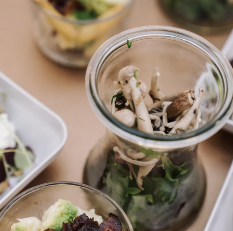

Frokostordninger, møder og kurser
Frokostordninger
Be My Guest varierer frokosten og gør middagspausen til en begivenhed. Med vores nyrenoverede køkkenfaciliteter, har vi skabt de bedste rammer for at levere en indbydende og næringsrig frokost til jeres virksomhed. Til mellemmåltider leverer vi frisk frugt, snacks til fredagsbaren eller lidt lækkert til den søde tand.
Drikkevare
Hos Be My Guest hjælper vi med at forkæle jeres gæster, og vi skænker jer oplevelser med unikke drikkevarer, der ikke giver lommesmerter. I samarbejde med Swm og udvalgte fagfolk finder vi den vin eller øl, der matcher madens nuancer og gør måltidet til en helstøbt nydelse. Vi har mange års erfaring med at finde og indkøbe den rette mængde af drikkevarer til både store og små selskaber.

Møder og kurser
Når vi skal lære noget nyt eller tage vigtige beslutninger i fælleskab, så kræves der fuld koncentration, og det koster energi. Be My Guest ved, at kreativitet, diskussion og læring kræver næring og har specialiseret sig i at levere ernæringsrigtige og energirige madordninger til møder og kursusarrangementer. Når det gælder møder og kurser, leverer vi alt fra den store buffet til småtterierne. Det kan komme i form af varme retter eller de små hapsere, som kan nydes uden tallerken, kniv og gaffel.

Vi har leveret frokost til sultne deltagere til vands, til lands og i luften og har stor erfaring med at servere frokosten, der bliver husket, i utraditionelle faciliteter. Og vi sørger for hele tiden at opdatere og videreudvikle vores opskrifter, så vores retter er tidsvarende og tilpasset årstiden. Vi glæder os eksempelvis til at bøgen springer ud, så vi kan servere vores hapsere med friske forårsløg.
Vi kan tilberede retterne fra vores køkken eller benytte jeres køkkenfaciliteter uden at gå på kompromis med kvaliteten i vores cateringservice. Kontakt os for et tilbud i forbindelse med afholdelse af kurser, møder, workshops eller seminarer og lad det gode i maden bidrage til et kreativt miljø, hvor alle går fra med en god oplevelse.